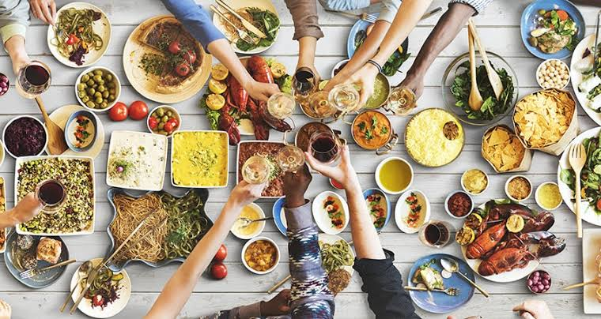

Saboreá

La comida es la forma más honesta de conocer un lugar: en cada plato hay historia, geografía y memoria familiar. Te ayudamos a distinguir el plato turístico del que realmente comen los locales, y por qué se cocina así desde hace generaciones.